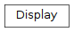

grove.display.base¶
Display Base Class
Classes¶
Display: All display devices should inherit this virtual class,
-
class
grove.display.base.Display[source]¶ All display devices should inherit this virtual class, which provide infrastructure such as cursor and backlight inteface, etc.
Inheritance

Variables¶
-
grove.display.base.TYPE_CHAR¶ int(x=0) -> int or long int(x, base=10) -> int or long
Convert a number or string to an integer, or return 0 if no arguments are given. If x is floating point, the conversion truncates towards zero. If x is outside the integer range, the function returns a long instead.
If x is not a number or if base is given, then x must be a string or Unicode object representing an integer literal in the given base. The literal can be preceded by ‘+’ or ‘-‘ and be surrounded by whitespace. The base defaults to 10. Valid bases are 0 and 2-36. Base 0 means to interpret the base from the string as an integer literal. >>> int(‘0b100’, base=0) 4 .. code-block:: guess
0
-
grove.display.base.TYPE_GRAY¶ int(x=0) -> int or long int(x, base=10) -> int or long
Convert a number or string to an integer, or return 0 if no arguments are given. If x is floating point, the conversion truncates towards zero. If x is outside the integer range, the function returns a long instead.
If x is not a number or if base is given, then x must be a string or Unicode object representing an integer literal in the given base. The literal can be preceded by ‘+’ or ‘-‘ and be surrounded by whitespace. The base defaults to 10. Valid bases are 0 and 2-36. Base 0 means to interpret the base from the string as an integer literal. >>> int(‘0b100’, base=0) 4 .. code-block:: guess
1
-
grove.display.base.TYPE_COLOR¶ int(x=0) -> int or long int(x, base=10) -> int or long
Convert a number or string to an integer, or return 0 if no arguments are given. If x is floating point, the conversion truncates towards zero. If x is outside the integer range, the function returns a long instead.
If x is not a number or if base is given, then x must be a string or Unicode object representing an integer literal in the given base. The literal can be preceded by ‘+’ or ‘-‘ and be surrounded by whitespace. The base defaults to 10. Valid bases are 0 and 2-36. Base 0 means to interpret the base from the string as an integer literal. >>> int(‘0b100’, base=0) 4 .. code-block:: guess
2
-
grove.display.base.MAX_GRAY¶ int(x=0) -> int or long int(x, base=10) -> int or long
Convert a number or string to an integer, or return 0 if no arguments are given. If x is floating point, the conversion truncates towards zero. If x is outside the integer range, the function returns a long instead.
If x is not a number or if base is given, then x must be a string or Unicode object representing an integer literal in the given base. The literal can be preceded by ‘+’ or ‘-‘ and be surrounded by whitespace. The base defaults to 10. Valid bases are 0 and 2-36. Base 0 means to interpret the base from the string as an integer literal. >>> int(‘0b100’, base=0) 4 .. code-block:: guess
100